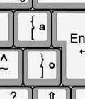

[08/08/2023]
The recent passing of Bram Moolenaar, the original creator of Vim and it's maintainer, has been one of the most unfortunate events of the year in the area of technology so far. Bram was probably one of the most influential software engineers and his editor defined a lot of decisions that would shape the editors used by most people nowadays.
I'll introduce here some interesting bits of Vim/NeoVim configuration that I find very useful on a daily basis.
Vim has paragraph browsing embedded into it and mapped to } and { (see the help pages). If you're not an US keyboard user however, this keybind is quite unintuitive, for example: in my ABNT2 keyboard, the } and { are mapped one on top of another.

} and { on ABNT2
My simple solution to this is to remap these keys to J and K (capital j and k).
noremap J }
noremap K {
There are a couple of keybinds I find add just that little bit more convenience that makes the editor so much more pleasant to use. In this section, I'll give a couple of examples:
You probably aren't aware of what ; even does inside Vim. In short, it repeats a textual find motion.
noremap ; :
noremap : ;
Normally, j and k browse through lines, which means if there's line wrapping you'll jump straight up
to the next line regards of what your display line is. I find that this is mostly unwanted behaviour,
so this rebinds it to gj and gk (which browse in display lines).
noremap j gj
noremap k gk
This one is just a simple rebind to make forking commands inside of the Vim shell easier.
noremap ! :!
I'm possibly not alone in this, but history look-up is annoying. I find that when I do need to find
a command I recently executed, simply pressing <Up> while inside the command prompt is more convenient
than finding it on the history tab, and whenever I do open it up it is by accident. Therefore I disable
opening it entirely to solve the issue.
noremap q: <nop>
noremap <C-f> <nop>
Lastly, if you've disabled K and remapped it to something else, there's another way of getting manpage access inside of
Vim: the Man command. Using :Man [pagename] opens up a shell window with a manpage.
Personally, I find a vertical window more pleasant to look at (since horizontal will cut your screen in half, and
most code that you'll use manpages inside, C and C++, will have some sort of line limit at 80 or 100).
noremap <Leader>m :vertical :Man
.vimrc if you haven't already
filetype plugin on
Vim is a very flexible editor that allows itself to mold to one's requirements. While some behaviour might not
be default, it is not hard to implement them inside a .vimrc that makes the editing experience
much more pleasant. I believe one of Vim's main strongpoints and why it has remained one of the most used editors
throughout all the years, besides it's well documented keymapping, is it's extensive customisability.
Vim charityware's nature also makes it special. The project's main goal is to raise funds for ICCF Holland. This goes to show the extent of Bram's mentality towards his own creation, and makes his missing presence going forward ever more absent in a sea of for-profit and ad-ridden software.